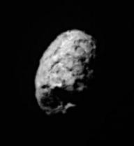
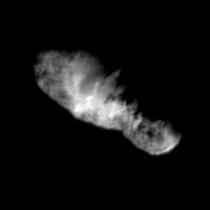
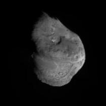
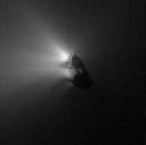
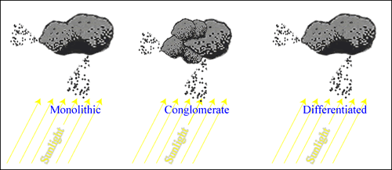
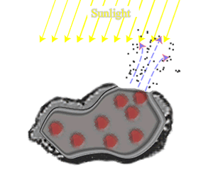
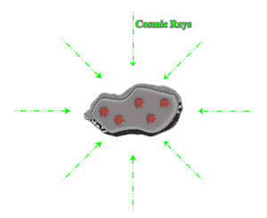

The key component to any comet is the cometary nucleus, for without this small (generally less than 20 km in diameter), icy body, the comet would not exist at all. The coma, hydrogen cloud and tails all result from the sublimation of ices from the nucleus which, when inactive at large distances from the Sun, looks just like an asteroid.
|

The nucleus of the 5 km long Comet Wild 2.
Credit: NASA/JPL |

The nucleus of the 8 km long Comet Borrelly.
Credit: NASA/US Geological Survey |

The nucleus of the 5 km long Comet Tempel 1.
Credit: NASA/JPL/UMD |

The active nucleus of the 16 km long Comet Halley.
Credit: ESA/MPAE |
The most popular model for the cometary nucleus was first put forward in 1950 by Fred Whipple. His ‘dirty snowball’ model proposes that the nucleus is a mixture of ices, dust and rock, an idea confirmed by several space missions that have rendezvoused with cometary nuclei. These missions have shown that the nuclei of comets have low albedos (comet Halley: 0.04, comet Borrelly: 0.03), and are composed of about 75% ices (primarily water) and 25% dust and rock.

Although these flybys revealed tantalising glimpses as to nature of cometary nuclei, much remains to be discovered. For example, what is the compositional nature of the nucleus – monolithic, conglomerate or differentiated? The low densities measured for the nucleus of comet Halley, and the break-up of comet Shoemaker-Levy before its impact with Jupiter, both support the idea of a conglomerate nucleus. If this is the case, the nucleus should be well insulated, and even material found relatively close to the surface should be unaffected by solar heating. This, and the fact that they are more readily accessible than Kuiper Belt Objects (also thought to be unchanged since the formation of the Solar System), would make cometary nuclei prime objects with which to study the early Solar System.
|

A ‘rubble mantle’ forms when sunlight heats the surface of the nucleus and sublimates the ice. Small dust particles are carried into the coma along with the gas, leaving large rocks (red) too heavy to be lifted as a rubble mantle. This mantle limits further sublimation as it effectively buries the volatile ices.
|
Another question yet to be answered is the nature of the low albedo measured for cometary nuclei. One idea is that it is due to a surface mantle of large rocks (a rubble mantle) left behind by the sublimating ice. It is thought that the surface of the nucleus could be almost completely covered by rubble within a single orbit, severely limiting the activity of the comet. |
| An alternative explanation for the low albedo, is that irradiation of the cometary nucleus by high-energy cosmic rays forms a mantle of dark, complex carbon compounds (an irradiation mantle). It is thought that the irradiation mantle would take millions of years to form (while the comet was in the outermost part of its orbit) and could be up to 1 metre thick. |

An ‘irradiation mantle’ forms when high-energy cosmic rays damage the bonds in the icy material resulting in complex organic compounds (black).
|
Although rotation causes different regions of the nucleus to face the Sun and become active, observations have shown that the activity is confined to only a small fraction of the side of the nucleus facing the Sun. This can be accounted for by the existence of one (or both) of these mantles. The resulting jets of gas can change the rotation of the nucleus and, if the activity is particularly vigorous, can also lead to changes in the orbit of the comet around the Sun.